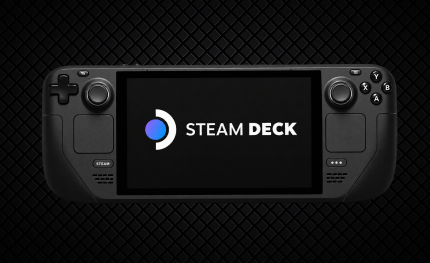

Uma biblioteca de PC na mão
O Steam Deck foi desenvolvido pela Valve para permitir que jogadores acessem muitos jogos da biblioteca Steam em um formato portátil.
CONHEÇA O STEAM DECK
Um computador portátil voltado para jogos que leva parte da biblioteca de PC para uma experiência móvel.

O Steam Deck foi desenvolvido pela Valve para permitir que jogadores acessem muitos jogos da biblioteca Steam em um formato portátil.
O aparelho combina controles, direcionais, botões, trackpads e tela em um único dispositivo, com opções de configuração para diferentes tipos de jogos.
Como usa uma plataforma baseada em PC, oferece ajustes de desempenho e configurações, embora a compatibilidade possa variar de jogo para jogo.